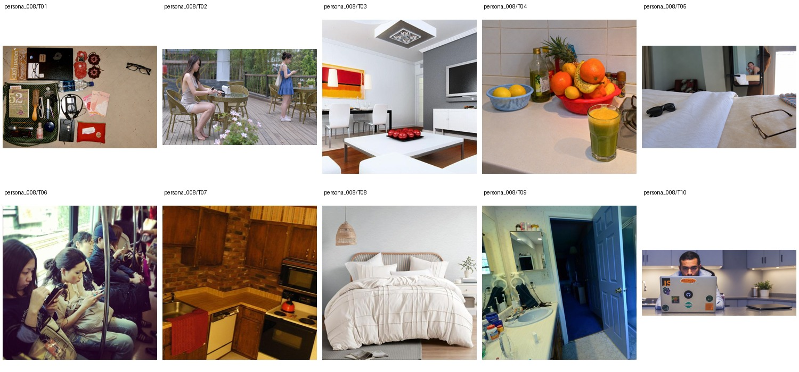

Firmware QA Engineer for smart-home devices · Bachelor's degree in Computer Engineering · 未提供数值年龄；按职业与教育背景推定为成年人
Cambria spends her workdays stress-testing appliance firmware, then unwinds by sending her friends dramatic storytelling comedy clips and brutally honest voice notes about their dating choices. She keeps a rotating folder of braided hairstyle tutorials, gym lifting plans, and makeup hacks, though she is more consistent with leg day than with cleaning her apartment. Her faith is central to how she frames relationships, and she has a soft spot for Nigerian romance dramas with loyal, expressive couples. Surprisingly, she also restores old mechanical keyboards and once drove three hours in her Nissan Rogue just to buy a rare set of translucent keycaps.
Move 1 · Replace 2 · Retouch 1 · Attribute Modification 8 · Add 1 · Background 5 · Remove 2 · Restyle 1
上层v3表达个性化编辑请求，底层列出操作、个性化参数及具体解析。125项global均不绑定题材或具体图片，由请求选择；人物基本信息、非global知识和图片保持不变。历史版本仅存internal；长期日常历史尚未构建。
整组图片与基础人物信息（已清理、统一字段）

{
"source": {
"dataset": "bowen-upenn/PersonaMem-v3",
"revision": "7b00a090b35b7293e6efeeb19494207f32b5a9ee",
"source_persona_id": "105",
"path": "backend/105/profile.json",
"raw_sha256": "e6d65498ae7d8de23675624910dc56c27273516cd146d12148e7cd9a339ebf77"
},
"basic_profile": {
"name": "Cambria Cazabon",
"age": null,
"gender": "cisgender female, heterosexual",
"nationality": null,
"languages": [],
"location": {
"city": null,
"region": null,
"country": null,
"description": null
},
"education": {
"degrees": [
"Bachelor's degree in Computer Engineering"
],
"fields": [],
"institutions": []
},
"occupation": {
"title": "Firmware QA Engineer for smart-home devices",
"organization": null,
"industry": null,
"status": null
},
"relationship_status": null,
"summary": null,
"biography": "Cambria spends her workdays stress-testing appliance firmware, then unwinds by sending her friends dramatic storytelling comedy clips and brutally honest voice notes about their dating choices. She keeps a rotating folder of braided hairstyle tutorials, gym lifting plans, and makeup hacks, though she is more consistent with leg day than with cleaning her apartment. Her faith is central to how she frames relationships, and she has a soft spot for Nigerian romance dramas with loyal, expressive couples. Surprisingly, she also restores old mechanical keyboards and once drove three hours in her Nissan Rogue just to buy a rare set of translucent keycaps.",
"hobbies": [],
"personality": {
"traits": [],
"values": [],
"quirks": [],
"big_five": {
"openness": "medium",
"conscientiousness": "medium",
"extraversion": "high",
"agreeableness": "low",
"neuroticism": "high"
}
},
"additional": {
"social_connections": [
{
"friend_id": "friend_1",
"display_name": "Celeste Callender",
"relationship_depth": "close",
"shared_interests": [
"church",
"dating voice notes",
"gym lifting"
]
},
{
"friend_id": "friend_2",
"display_name": "Chantal Corbin",
"relationship_depth": "close",
"shared_interests": [
"braid tutorials",
"makeup hacks",
"close girlfriends"
]
},
{
"friend_id": "friend_3",
"display_name": "Naomi Clarke",
"relationship_depth": "close",
"shared_interests": [
"faith talks",
"Nigerian romance dramas",
"boundaries"
]
},
{
"friend_id": "friend_4",
"display_name": "Celeste Chukwu",
"relationship_depth": "acquaintance",
"shared_interests": [
"church",
"Nigerian romance dramas"
]
},
{
"friend_id": "friend_5",
"display_name": "Celine Crooks",
"relationship_depth": "acquaintance",
"shared_interests": [
"beauty creators",
"braid tutorials"
]
},
{
"friend_id": "friend_6",
"display_name": "Carissa Cabrera",
"relationship_depth": "acquaintance",
"shared_interests": [
"language learning",
"self-improvement",
"boundaries"
]
},
{
"friend_id": "friend_7",
"display_name": "Simone Charles",
"relationship_depth": "acquaintance",
"shared_interests": [
"engineer-adjacent posts",
"smart-home tech"
]
},
{
"friend_id": "friend_8",
"display_name": "Cheryl Cadogan",
"relationship_depth": "distant",
"shared_interests": [
"church community",
"family updates"
]
},
{
"friend_id": "friend_9",
"display_name": "Corinne Cumberbatch",
"relationship_depth": "distant",
"shared_interests": [
"local community",
"school friends"
]
},
{
"friend_id": "friend_10",
"display_name": "Patrice Coulibaly",
"relationship_depth": "distant",
"shared_interests": [
"culture mutuals",
"language learning",
"faith mutuals"
]
}
]
}
},
"adult_eligibility": {
"status": "adult",
"basis": "adult_career_and_education_context",
"inferred": true,
"numeric_age_provided": false
},
"persona_id": "persona_008"
}